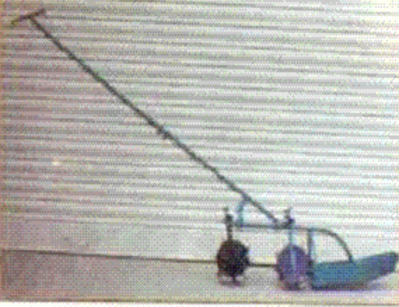
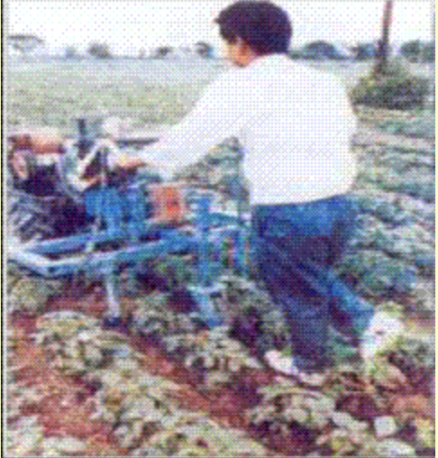

6.0 ਇੰਟਰਕਲਚਰ ਉਪਕਰਨ
- 6.1 ਸੁੱਕੀ ਜ਼ਮੀਨ ਪੈਗ ਵੇਡਰ
- 6.2 ਵ੍ਹੀਲ ਹੈਂਡ ਹੋ
- 6.3 ਕੋਨੋ ਵੀਡਰ
- 6.4 ਪਾਵਰ ਟਿਲਰ ਦੁਆਰਾ ਸੰਚਾਲਿਤ ਸਵੀਪ ਟਾਇਨ ਕਲਟੀਵੇਟਰ
- 6.5 ਸਵੈ-ਚਾਲਿਤ ਪਾਵਰ ਵੀਡਰ
6.1 ਡਰਾਈਲੈਂਡ ਪੈਗ ਵੇਡਰ

ਵਿਸ਼ੇਸ਼ਤਾਵਾਂ
ਸੁੱਕੀ ਜ਼ਮੀਨ ਦਾ ਬੂਟੀ (ਖੂੰਡੀ ਦੀ ਕਿਸਮ) ਹੱਥੀਂ ਸੰਚਾਲਿਤ ਨਦੀਨ ਹੈ ਜੋ ਫਸਲਾਂ ਦੀਆਂ ਕਤਾਰਾਂ ਵਿਚਕਾਰ ਕੰਮ ਕਰਨ ਲਈ ਢੁਕਵਾਂ ਹੈ। ਇਸ ਵਿੱਚ ਇੱਕ ਰੋਲਰ ਹੁੰਦਾ ਹੈ, ਜਿਸ ਵਿੱਚ ਹਲਕੇ ਸਟੀਲ ਦੀਆਂ ਡੰਡੀਆਂ ਨਾਲ ਜੁੜੀਆਂ ਦੋ ਹਲਕੇ ਸਟੀਲ ਡਿਸਕਾਂ ਹੁੰਦੀਆਂ ਹਨ। ਛੋਟੇ ਹੀਰਿਆਂ ਦੇ ਆਕਾਰ ਦੇ ਖੰਭਿਆਂ ਨੂੰ ਡੰਡੇ 'ਤੇ ਇੱਕ ਅੜਿੱਕੇ ਢੰਗ ਨਾਲ ਵੇਲਡ ਕੀਤਾ ਜਾਂਦਾ ਹੈ। ਪੂਰੀ ਰੋਲਰ ਅਸੈਂਬਲੀ ਹਲਕੇ ਸਟੀਲ ਦੀ ਬਣੀ ਹੋਈ ਹੈ. V ਆਕਾਰ ਵਾਲਾ ਬਲੇਡ ਰੋਲਰ ਅਸੈਂਬਲੀ ਦਾ ਪਾਲਣ ਕਰਦਾ ਹੈ ਅਤੇ ਬਾਹਾਂ 'ਤੇ ਮਾਊਂਟ ਹੁੰਦਾ ਹੈ... ਬਲੇਡ ਦੀ ਉਚਾਈ ਨੂੰ ਕੰਮ ਕਰਨ ਦੀ ਡੂੰਘਾਈ ਦੇ ਅਨੁਸਾਰ ਐਡਜਸਟ ਕੀਤਾ ਜਾ ਸਕਦਾ ਹੈ. ਬਾਹਾਂ ਨੂੰ ਹੈਂਡਲ ਅਸੈਂਬਲੀ ਨਾਲ ਜੋੜਿਆ ਜਾਂਦਾ ਹੈ, ਜੋ ਕਿ ਪਤਲੀ ਕੰਧ ਵਾਲੀਆਂ ਪਾਈਪਾਂ ਤੋਂ ਬਣਿਆ ਹੁੰਦਾ ਹੈ। ਹੈਂਡਲ ਦੀ ਉਚਾਈ ਨੂੰ ਵੀ ਆਪਰੇਟਰ ਦੀ ਲੋੜ ਅਨੁਸਾਰ ਐਡਜਸਟ ਕੀਤਾ ਜਾ ਸਕਦਾ ਹੈ. ਨਦੀਨਾਂ ਨੂੰ ਹਟਾਉਣ ਲਈ ਇਸ ਨੂੰ ਵਾਰ-ਵਾਰ ਧੱਕਾ ਦਿੱਤਾ ਜਾਂਦਾ ਹੈ ਅਤੇ ਖੜ੍ਹੀ ਸਥਿਤੀ ਵਿੱਚ ਫਸਲਾਂ ਦੀਆਂ ਕਤਾਰਾਂ ਦੇ ਵਿਚਕਾਰ ਖਿੱਚਿਆ ਜਾਂਦਾ ਹੈ। ਹੀਰੇ ਦੇ ਆਕਾਰ ਦੇ ਖੰਭੇ ਮਿੱਟੀ ਵਿੱਚ ਪ੍ਰਵੇਸ਼ ਕਰਦੇ ਹਨ ਅਤੇ ਰੋਲਿੰਗ ਕਿਰਿਆ ਮਿੱਟੀ ਨੂੰ ਘੁਲਦੀ ਹੈ। ਪੁਸ਼ ਮੋਡ ਵਿੱਚ ਬਲੇਡ ਮਿੱਟੀ ਵਿੱਚ ਪ੍ਰਵੇਸ਼ ਕਰਦਾ ਹੈ ਅਤੇ ਨਦੀਨਾਂ ਨੂੰ ਕੱਟਦਾ ਜਾਂ ਪੁੱਟ ਦਿੰਦਾ ਹੈ।
ਨਿਰਧਾਰਨ:
| ਸਮੁੱਚੀ ਲੰਬਾਈ (mm) | : 1680 |
| ਸਮੁੱਚੀ ਚੌੜਾਈ (mm) | : 590 |
| ਸਮੁੱਚੀ ਉਚਾਈ (mm) | : 1080 |
| ਪੈਗ ਵ੍ਹੀਲ ਦਾ ਵਿਆਸ (ਮਿਲੀਮੀਟਰ) | : 220 |
| ਵਰਕਿੰਗ ਚੌੜਾਈ (mm) | : 150 |
| ਭਾਰ (ਕਿਲੋਗ੍ਰਾਮ) | : 8-10 |
ਵਰਤੋਂ:
| ਇਸਦੀ ਵਰਤੋਂ ਮਿੱਟੀ ਦੀ ਛਾਲੇ ਨੂੰ ਤੋੜਨ ਅਤੇ ਮਿੱਟੀ ਦੀ ਮਲਚ ਬਣਾਉਣ ਲਈ ਵੀ ਕੀਤੀ ਜਾਂਦੀ ਹੈ।ਮਸ਼ੀਨ ਦੀ ਕੀਮਤ: ਰੁਪਏ 800/-
6.2 ਵ੍ਹੀਲ ਹੈਂਡ ਕੁਡੀ

ਵਿਸ਼ੇਸ਼ਤਾਵਾਂ
ਵ੍ਹੀਲ ਹੈਂਡ ਹੋਅ ਕਤਾਰਾਂ ਦੀਆਂ ਫਸਲਾਂ ਵਿੱਚ ਨਦੀਨਾਂ ਅਤੇ ਅੰਤਰ-ਕਲਚਰ ਕਰਨ ਲਈ ਇੱਕ ਵਿਆਪਕ ਤੌਰ 'ਤੇ ਸਵੀਕਾਰਿਆ ਜਾਣ ਵਾਲਾ ਨਦੀਨ ਸੰਦ ਹੈ। ਇਹ ਇੱਕ ਲੰਬਾ ਹੈਂਡਲਡ ਟੂਲ ਹੈ ਜੋ ਧੱਕਣ ਅਤੇ ਖਿੱਚਣ ਦੀ ਕਾਰਵਾਈ ਦੁਆਰਾ ਚਲਾਇਆ ਜਾਂਦਾ ਹੈ। ਪਹੀਏ ਦੀ ਸੰਖਿਆ ਇੱਕ ਤੋਂ ਦੋ ਤੱਕ ਹੁੰਦੀ ਹੈ ਅਤੇ ਵਿਆਸ ਡਿਜ਼ਾਈਨ 'ਤੇ ਨਿਰਭਰ ਕਰਦਾ ਹੈ। ਫਰੇਮ ਵਿੱਚ ਵੱਖ-ਵੱਖ ਕਿਸਮਾਂ ਦੇ ਮਿੱਟੀ ਨਾਲ ਕੰਮ ਕਰਨ ਵਾਲੇ ਸੰਦਾਂ ਜਿਵੇਂ ਕਿ ਸਿੱਧੇ ਬਲੇਡ, ਉਲਟਾਉਣ ਯੋਗ ਬਲੇਡ, ਸਵੀਪਸ, V-ਬਲੇਡ, ਟਾਈਨ ਕਲਟੀਵੇਟਰ, ਪ੍ਰਾਂਗਡ ਹੋ, ਲਘੂ ਫਰੂਅਰ, ਸਪਾਈਕ ਹੈਰੋ (ਰੇਕ) ਆਦਿ। ਇਹ ਇਕੱਲੇ ਵਿਅਕਤੀ ਦੁਆਰਾ ਚਲਾਇਆ ਜਾ ਸਕਦਾ ਹੈ। ਟੂਲ ਦੇ ਸਾਰੇ ਮਿੱਟੀ ਦੇ ਕੰਮ ਕਰਨ ਵਾਲੇ ਹਿੱਸੇ ਬਣਾਏ ਗਏ ਹਨ ਮੱਧਮ ਕਾਰਬਨ ਸਟੀਲ ਤੋਂ ਅਤੇ 40-45 HRC ਤੱਕ ਸਖ਼ਤ। ਓਪਰੇਸ਼ਨ ਲਈ, ਟੂਲ ਦੀ ਕਾਰਜਸ਼ੀਲ ਡੂੰਘਾਈ ਅਤੇ ਹੈਂਡਲ ਦੀ ਉਚਾਈ ਨੂੰ ਐਡਜਸਟ ਕੀਤਾ ਜਾਂਦਾ ਹੈ ਅਤੇ ਪਹੀਏ ਦੀ ਕੁੰਡਲੀ ਨੂੰ ਵਾਰ-ਵਾਰ ਪੁਸ਼-ਪੁੱਲ ਐਕਸ਼ਨ ਦੁਆਰਾ ਚਲਾਇਆ ਜਾਂਦਾ ਹੈ ਜਿਸ ਨਾਲ ਮਿੱਟੀ ਵਿੱਚ ਕੰਮ ਕਰਨ ਵਾਲੇ ਹਿੱਸੇ ਮਿੱਟੀ ਵਿੱਚ ਪ੍ਰਵੇਸ਼ ਕਰਨ ਅਤੇ ਫਸਲਾਂ ਦੀਆਂ ਕਤਾਰਾਂ ਦੇ ਵਿਚਕਾਰ ਨਦੀਨਾਂ ਨੂੰ ਕੱਟਣ/ਉਖਾੜਨ ਲਈ। ਇਸ ਕਾਰਵਾਈ ਨਾਲ ਨਦੀਨ ਵੀ ਮਿੱਟੀ ਵਿੱਚ ਦੱਬ ਜਾਂਦੇ ਹਨ।
ਨਿਰਧਾਰਨ:
| ਸਮੁੱਚੀ ਲੰਬਾਈ (mm) : | : 1400- 1500 |
| ਸਮੁੱਚੀ ਚੌੜਾਈ (mm) | : 450- 500 |
| ਸਮੁੱਚੀ ਉਚਾਈ (mm) : | : 800- 1000 |
| ਟਾਈਨਾਂ ਦੀ ਸੰਖਿਆ | : 3 ਨੰਬਰ। |
| ਪਹੀਏ ਦਾ ਵਿਆਸ (mm) | : 200- 600 |
| ਵਰਕਿੰਗ ਡੂੰਘਾਈ (mm) | : 60 ਤੱਕ |
| ਵਜ਼ਨ (ਕਿਲੋਗ੍ਰਾਮ) | : 4- 12 |
ਵਰਤੋਂ:
ਕਤਾਰਾਂ ਵਿੱਚ ਬੀਜੀਆਂ ਸਬਜ਼ੀਆਂ ਅਤੇ ਹੋਰ ਫਸਲਾਂ ਵਿੱਚ ਨਦੀਨਾਂ ਅਤੇ ਅੰਤਰ-ਸਭਿਆਚਾਰਕ ਕਾਰਜਾਂ ਲਈ।
ਮਸ਼ੀਨ ਦੀ ਕੀਮਤ: 1200/- ਰੁਪਏ
6.3 ਕੋਨੋ ਵੇਡਰ
ਵਿਸ਼ੇਸ਼ਤਾਵਾਂ
ਵੀਡਰ ਵਿੱਚ ਦੋ ਰੋਟਰ, ਫਲੋਟ, ਫਰੇਮ ਅਤੇ ਹੈਂਡਲ ਹੁੰਦੇ ਹਨ। ਰੋਟਰ ਆਕਾਰ ਵਿਚ ਕੋਨ ਫਰਸਟਮ ਹੁੰਦੇ ਹਨ, ਨਿਰਵਿਘਨ ਅਤੇ ਸੇਰੇਟਡ ਸਟ੍ਰਿਪਾਂ 'ਤੇ ਵੇਲਡ ਕੀਤੇ ਜਾਂਦੇ ਹਨ ਇਸ ਦੀ ਲੰਬਾਈ ਦੇ ਨਾਲ ਸਤਹ. ਰੋਟਰਾਂ ਨੂੰ ਉਲਟ ਦਿਸ਼ਾ ਦੇ ਨਾਲ ਮਿਲ ਕੇ ਮਾਊਂਟ ਕੀਤਾ ਜਾਂਦਾ ਹੈ। ਫਲੋਟ, ਰੋਟਰ ਅਤੇ ਹੈਂਡਲ ਫਰੇਮ ਨਾਲ ਜੁੜੇ ਹੋਏ ਹਨ। ਫਲੋਟ ਕੰਮ ਕਰਨ ਦੀ ਡੂੰਘਾਈ ਨੂੰ ਕੰਟਰੋਲ ਕਰਦਾ ਹੈ ਅਤੇ ਨਹੀਂ ਰੋਟਰ ਅਸੈਂਬਲੀ ਨੂੰ ਛੱਪੜ ਵਿੱਚ ਡੁੱਬਣ ਦਿਓ। ਕੋਨੋ ਵੀਡਰ ਨੂੰ ਪੁਸ਼ਿੰਗ ਐਕਸ਼ਨ ਦੁਆਰਾ ਚਲਾਇਆ ਜਾਂਦਾ ਹੈ। ਰੋਟਰਾਂ ਦੀ ਸਥਿਤੀ ਮਿੱਟੀ ਦੇ ਉੱਪਰਲੇ 3 ਸੈਂਟੀਮੀਟਰ ਵਿੱਚ ਅੱਗੇ-ਪਿੱਛੇ ਹਿਲਜੁਲ ਪੈਦਾ ਕਰਦੀ ਹੈ ਅਤੇ ਨਦੀਨਾਂ ਨੂੰ ਪੁੱਟਣ ਵਿੱਚ ਮਦਦ ਕਰਦੀ ਹੈ।
ਨਿਰਧਾਰਨ:
| ਚੌੜਾਈ (mm) | : |
| ਉਚਾਈ (mm) | : 1400 |
| ਕਿਸਮ | : ਹੱਥੀਂ ਸੰਚਾਲਿਤ |
| ਵਜ਼ਨ (ਕਿਲੋਗ੍ਰਾਮ) | : 5 ਤੋਂ 6 |
| ਰੋਟਰਾਂ ਦੀ ਗਿਣਤੀ | : 2 |
| ਸਮਰੱਥਾ (ha/day)' | : 0.18 |
ਵਰਤੋਂ:
ਕੋਨੋ ਵੀਡਰ ਦੀ ਵਰਤੋਂ ਝੋਨੇ ਦੀ ਫ਼ਸਲ ਦੀਆਂ ਕਤਾਰਾਂ ਵਿਚਕਾਰ ਨਦੀਨਾਂ ਨੂੰ ਕੁਸ਼ਲਤਾ ਨਾਲ ਹਟਾਉਣ ਲਈ ਕੀਤੀ ਜਾਂਦੀ ਹੈ। ਇਹ ਚਲਾਉਣਾ ਆਸਾਨ ਹੈ, ਅਤੇ ਛੱਪੜ ਵਿੱਚ ਨਹੀਂ ਡੁੱਬਦਾ।
ਮਸ਼ੀਨ ਦੀ ਕੀਮਤ: 1500/- ਰੁਪਏ
6.4 ਪਾਵਰ ਟਿਲਰ ਦੁਆਰਾ ਸੰਚਾਲਿਤ ਸਵੀਪ ਟਾਇਨ ਕਲਟੀਵੇਟਰ
ਵਿਸ਼ੇਸ਼ਤਾਵਾਂ
ਇਹ ਮਸ਼ੀਨ ਵਿਸ਼ੇਸ਼ ਤੌਰ 'ਤੇ 5-8 hp (4.5-6.0 kW) ਦੇ ਪਾਵਰ ਟਿਲਰ ਨਾਲ ਸੰਚਾਲਨ ਲਈ ਤਿਆਰ ਕੀਤੀ ਗਈ ਹੈ। ਸੋਇਆਬੀਨ, ਸਰਘਮ, ਬੰਗਾਲ ਛੋਲੇ, ਮਟਰ ਆਦਿ ਵਿੱਚ ਖੜ੍ਹੀ ਫਸਲ ਵਿੱਚ ਅੰਤਰ-ਖੇਤੀ ਕਾਰਜ ਕਰਨ ਲਈ ਜਿੱਥੇ ਕਤਾਰਾਂ ਦੀ ਵਿੱਥ ਇੰਨੀ ਚੌੜੀ ਹੈ ਕਿ ਪਾਵਰ ਟਿਲਰ ਪੌਦਿਆਂ ਨੂੰ ਨੁਕਸਾਨ ਪਹੁੰਚਾਏ ਬਿਨਾਂ ਲੰਘ ਸਕਦਾ ਹੈ। ਸੰਚਾਲਨ ਦੀ ਇਕਸਾਰ ਡੂੰਘਾਈ ਨੂੰ ਬਣਾਈ ਰੱਖਣ ਲਈ ਇਸਦੇ ਪਿਛਲੇ ਪਾਸੇ ਇੱਕ ਡੂੰਘਾਈ ਕੰਟਰੋਲ ਵ੍ਹੀਲ ਦਿੱਤਾ ਗਿਆ ਹੈ। ਇਹ ਮੱਧਮ ਅਤੇ ਹਲਕੀ ਮਿੱਟੀ ਲਈ ਢੁਕਵਾਂ ਹੈ। ਇਸ ਨੂੰ ਚਲਾਉਣ ਲਈ ਗਰਾਊਂਡ ਵ੍ਹੀਲ ਦਿੱਤਾ ਗਿਆ ਹੈ ਮੀਟਰਿੰਗ ਵਿਧੀ. ਇਸ ਦੇ ਕੁਝ ਪ੍ਰਮੁੱਖ ਹਿੱਸੇ ਅੜਿੱਕਾ ਸਿਸਟਮ, ਹੈਂਡਲ, ਨਾਲ ਮੁੱਖ ਫਰੇਮ ਹਨ। ਅਤੇ ਡਰਾਈਵ ਵ੍ਹੀਲ ਅਤੇ ਟਾਇਨਸ।
ਨਿਰਧਾਰਨ:
| ਲੰਬਾਈ (mm) | : 930 |
| ਚੌੜਾਈ (mm) | : 1580 |
| ਉਚਾਈ (mm) | : 1370 |
| ਵਜ਼ਨ (ਕਿਲੋਗ੍ਰਾਮ) | : 40 |
| ਵਰਕਿੰਗ ਚੌੜਾਈ (mm) | : 1350 |
| ਵਰਕਿੰਗ ਡੂੰਘਾਈ (mm) | : 50 |
| ਨਦੀਨ ਕੁਸ਼ਲਤਾ (%) | : 50-60 |
| ਓਪਰੇਟਿੰਗ ਸਪੀਡ (km/h) | : 1.8-2.5 |
| ਬਾਲਣ ਦੀ ਖਪਤ (l/h) | : 0.7-1.0 |
| ਫੀਲਡ ਸਮਰੱਥਾ (ha/h) | : 0.18-0.25 |
| ਪਾਵਰ ਸਰੋਤ(hp/kW) | : 5-8/4.5-6.0, ਇੰਜਣ |
ਵਰਤੋਂ:
ਇਸਦੀ ਵਰਤੋਂ ਸੋਇਆਬੀਨ, ਸਰਘਮ, ਬੰਗਾਲ ਛੋਲੇ, ਕਬੂਤਰ ਮਟਰ ਆਦਿ ਵਿੱਚ ਖੜ੍ਹੀ ਫਸਲ ਵਿੱਚ ਅੰਤਰ-ਕਲਚਰ ਕਾਰਵਾਈਆਂ ਕਰਨ ਲਈ ਕੀਤੀ ਜਾਂਦੀ ਹੈ।
ਮਸ਼ੀਨ ਦੀ ਕੀਮਤ: 15,000/- ਰੁਪਏ
6.5 ਸਵੈ-ਪ੍ਰੋਪੇਲਡ ਪਾਵਰ ਵੀਡਰ

ਵਿਸ਼ੇਸ਼ਤਾਵਾਂ
ਇੱਕ ਡੀਜ਼ਲ ਇੰਜਣ ਬੂਟੀ ਨੂੰ ਚਲਾਉਂਦਾ ਹੈ। ਇੰਜਣ ਦੀ ਸ਼ਕਤੀ ਨੂੰ ਜ਼ਮੀਨੀ ਪਹੀਏ ਦੁਆਰਾ ਪ੍ਰਸਾਰਿਤ ਕੀਤਾ ਜਾਂਦਾ ਹੈ V ਬੈਲਟ-ਪੁਲੀ. ਓਪਰੇਟਿੰਗ ਡੂੰਘਾਈ ਨੂੰ ਬਰਕਰਾਰ ਰੱਖਣ ਲਈ ਪਿਛਲੇ ਪਾਸੇ ਇੱਕ ਟੇਲ ਵ੍ਹੀਲ ਦਿੱਤਾ ਗਿਆ ਹੈ। ਨਦੀਨ ਰੋਟਰੀ ਵੇਡਿੰਗ ਅਟੈਚਮੈਂਟ ਦੁਆਰਾ ਕੀਤੀ ਜਾਂਦੀ ਹੈ। ਰੋਟਰੀ ਵੇਡਰ ਦੀਆਂ ਤਿੰਨ ਕਤਾਰਾਂ ਹੁੰਦੀਆਂ ਹਨ ਹਰ ਡਿਸਕ ਵਿੱਚ ਵਿਕਲਪਿਕ ਤੌਰ 'ਤੇ ਉਲਟ ਦਿਸ਼ਾਵਾਂ ਵਿੱਚ 6 ਨੰਬਰ ਦੇ ਕਰਵ ਬਲੇਡਾਂ ਨਾਲ ਮਾਊਂਟ ਕੀਤੀਆਂ ਡਿਸਕਾਂ। ਘੁੰਮਦੇ ਸਮੇਂ ਇਹ ਬਲੇਡ ਮਿੱਟੀ ਨੂੰ ਕੱਟਣ ਅਤੇ ਮਲਚਿੰਗ ਨੂੰ ਸਮਰੱਥ ਬਣਾਉਂਦੇ ਹਨ। ਰੋਟਰੀ ਦੇ ਕਵਰੇਜ ਦੀ ਚੌੜਾਈ ਟਿਲਰ 500 ਮਿਲੀਮੀਟਰ ਹੈ ਅਤੇ ਫਸਲੀ ਖੇਤ ਵਿੱਚ ਮਿੱਟੀ ਨੂੰ ਨਦੀਨ ਅਤੇ ਮਲਚਿੰਗ ਲਈ ਕਾਰਵਾਈ ਦੀ ਡੂੰਘਾਈ ਨੂੰ ਐਡਜਸਟ ਕੀਤਾ ਜਾ ਸਕਦਾ ਹੈ।
ਨਿਰਧਾਰਨ:
| ਕਿਸਮ | : ਸਵੈ-ਚਾਲਿਤ |
| ਸਮੁੱਚੀ ਮਾਪ(LxWXH) | : 2400 x 1750 x 1100 mm |
| ਵਜ਼ਨ | : 200 ਕਿਲੋਗ੍ਰਾਮ |
| ਸਮਰੱਥਾ | : 1 - 1.2 ਹੈਕਟੇਅਰ ਪ੍ਰਤੀ ਦਿਨ |
| ਪਾਵਰ ਦੀ ਲੋੜ(hp/kW) | : 3-5/2.25-3.75 ਡੀਜ਼ਲ/ਪੈਟਰੋਲ ਇੰਜਣ |
ਵਰਤੋਂ:
ਟੈਪੀਓਕਾ, ਕਪਾਹ, ਗੰਨਾ, ਮੱਕੀ, ਟਮਾਟਰ ਅਤੇ ਦਾਲਾਂ ਦੀਆਂ ਕਤਾਰਾਂ ਵਿੱਚ 45 ਸੈਂਟੀਮੀਟਰ ਤੋਂ ਵੱਧ ਦੂਰੀ ਵਾਲੀਆਂ ਫਸਲਾਂ ਦੀਆਂ ਕਤਾਰਾਂ ਵਿਚਕਾਰ ਨਦੀਨ ਲਈ ਉਪਯੋਗੀ। ਮਸ਼ੀਨ ਨਾਲ ਸਵੀਪ ਬਲੇਡ, ਰਿਜ਼ਰ, ਟ੍ਰੇਲਰ ਆਦਿ ਅਟੈਚਮੈਂਟਾਂ ਨੂੰ ਜੋੜਿਆ ਜਾ ਸਕਦਾ ਹੈ।